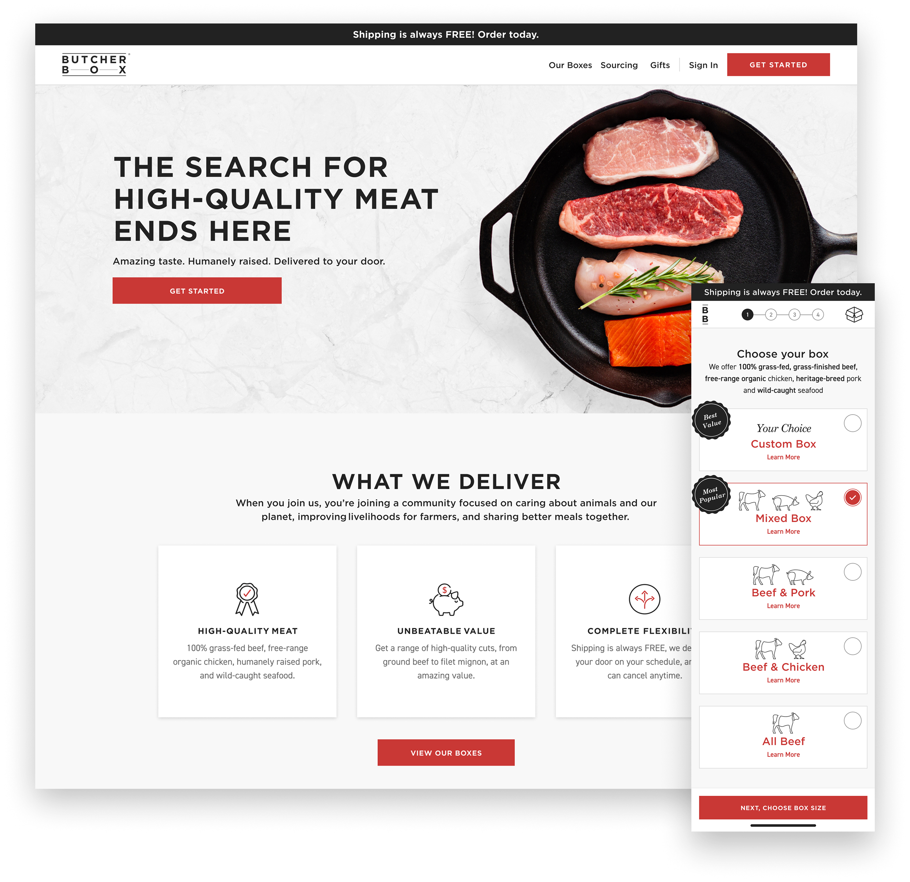
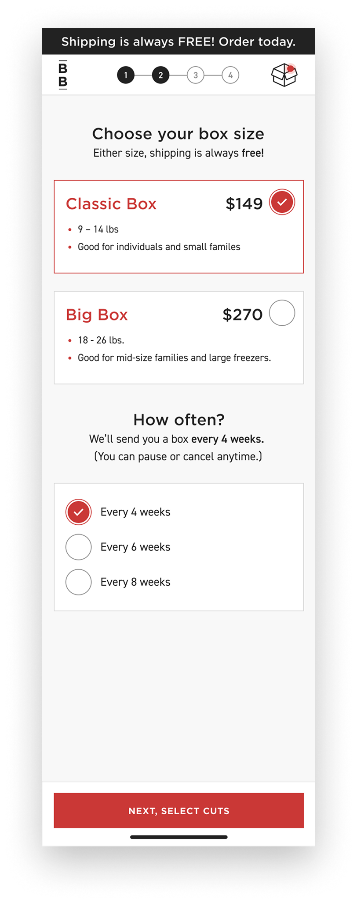
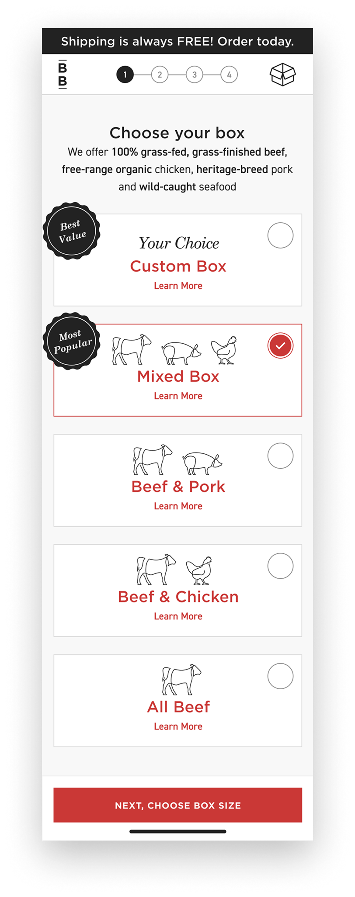
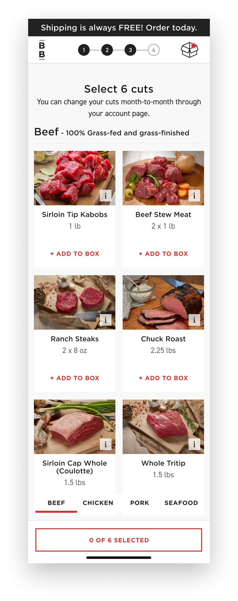
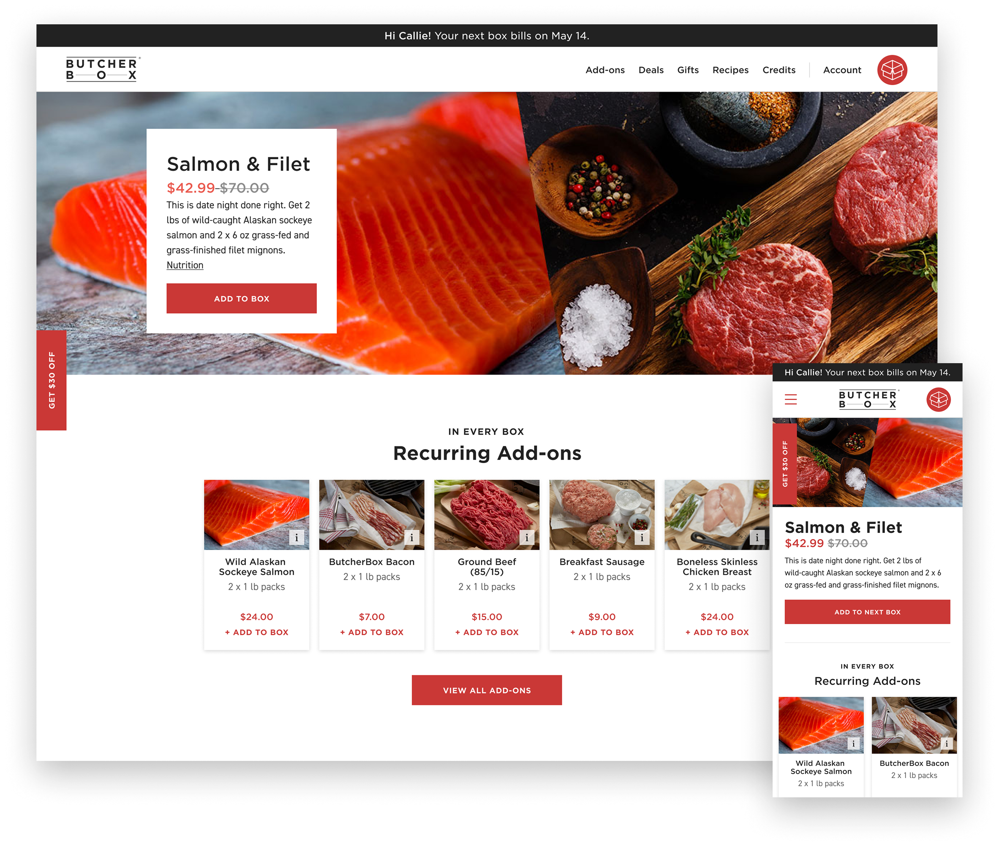
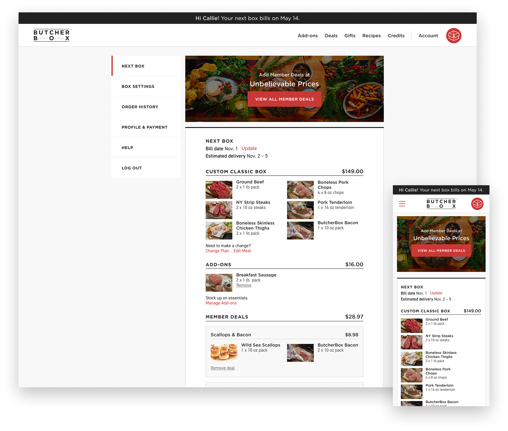

ButcherBox
Designing a better subscription experience to drive growth
During a four-year engagement, I led UX & product design for ButcherBox, partnering with product and engineering to improve the member experience from signup through ongoing subscription management. I led a small team of designers and a UX researcher as we redesigned subscription onboarding, member shopping, and subscription management, helping increase mobile conversion and average order value while reducing customer support through better self-service.
Feb 2019 – May 2023
Engagement
Mobile conversion
Subscription onboarding
AOV
Member shopping
CX inbound
Account management

I redesigned the homepage for clarity by reducing navigation and elevating the value propositions. I also created simple mobile first subscription onboarding.
A clear picture before a single pixel moved
Before any design work started, I ran a UX assessment with a UX researcher that included a UX audit, unmoderated usability testing, and interviews with current members. The assessment allowed us to understand where and why the experience was breaking down.
Three findings shaped everything that followed.
Those findings aligned the team on two priorities: communicate ButcherBox's value early and often, and design a consistent, mobile-first experience that anticipates what members need next.



A sign up flow that communicates value & has a finish line
The old flow had no progress indicator, no persistent summary of selections, and no clear end in sight.
I redesigned it as a four-step flow built for thumbs, generous tap targets, a progress indicator at the top of each screen, and a persistent "Your Box" panel so customers could see and adjust their selections at any point without feeling locked in. ButcherBox's value messaging was woven into each step rather than front-loaded and forgotten.
We validated the redesign with usability testing before launch and iterated on two friction points identified in those sessions.

A member experience worth coming back to
After signup, members landed in an experience that made it difficult to do anything. Box management was buried and add-ons and deals were hard to find. I redesigned the member homepage and navigation around a more familiar e-commerce IA. Deals and add-ons are surfaced prominently, your next box is always visible and editable like a cart, and a new section for browsing and saving recipes.
The subscription management view was redesigned around the member's next box. Bill date and estimated delivery date are prominent, estimated delivery was missing entirely from the old experience, and it matters: members need to know when their box is arriving so the contents go straight to the freezer. Price totals are broken out transparently by category, subscription box, deals, and add-ons, with thumbnail photos and clear edit controls for every product. The goal throughout was to make sure members never felt locked into a plan they couldn't adjust.
